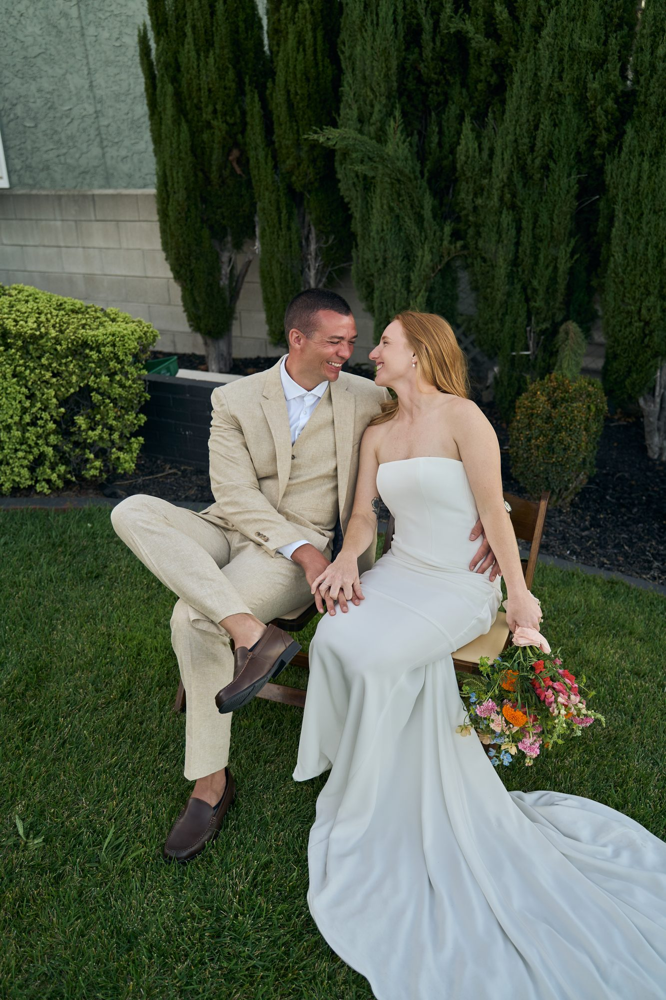

Ten spots along the coast and in the parks, with the permit rules for each, guest caps, the best light, parking, and what an elopement costs all in. A 2026 guide from a photographer who shoots these cliffs and beaches every week.
Every spot below is somewhere you can say vows. Whether those vows are legally binding depends on who performs them and whether a California marriage license is signed afterward. The license comes from any county clerk in the state, costs $129 for a public license or $144 for a confidential one in San Diego, and needs no residency, blood test or waiting period. The full courthouse guide walks through the appointment and fees.

| Spot | Ceremony permit | Guest cap | Best light | Parking |
|---|---|---|---|---|
| Sunset Cliffs Natural Park | City of San Diego, three permitted points | 50 | Last 90 minutes before sunset | Street and small lots, short walk |
| The Wedding Bowl, Cuvier Park | City of San Diego, one permit a day | 50 | Golden hour, faces west | Street only, five steps down |
| Scripps Park and La Jolla Cove | City of San Diego, one permit a day | 80 (50 in summer) | Late afternoon to sunset | Street, busy on weekends |
| Calumet Park, Bird Rock | City of San Diego | 80 | Sunset | Residential street |
| Windansea Beach | City of San Diego | 50 | Sunset, often clear when the Cove is grey | Street, steps to the sand |
| Coronado Central Beach | City of Coronado park permit | Set by permit | Evening, soft and wide | Ocean Boulevard street parking |
| Torrey Pines State Beach | California State Parks | Set by permit | Sunset below the bluffs | State lot or Highway 101 shoulder |
| Balboa Park gardens | City of San Diego, max 20 chairs in the gardens | 50 to 75 by garden | Morning or late afternoon shade | Free lots, short walk |
| Mount Soledad | La Jolla Rec Center (lawn) or the Memorial Association (cross and steps) | Ask when booking | Sunset over the whole coast | Lot at the top |
| Cardiff and Encinitas beaches | California State Parks | Set by permit | Sunset | State lots, Highway 101 |
| County Administration Center waterfront | None for photos after a Clerk ceremony | Indoor rooms 15 to 20; outdoors open | Afternoon on the bay side | Paid lots, Waterfront Park |
Guest caps and permit terms are from the city's permitted sites list and each office's page as of October 2026. Fees are not published in the list; the city points you to its current Parks and Recreation fee schedule and the Permit Center at (619) 235-1169.
The one everyone pictures: sandstone cliffs, the Pacific straight ahead, and a sun that goes into the water instead of behind a hill. Sunset Cliffs is a City of San Diego park, and the city permits ceremonies at three named points along it: Ladera Street, Luscomb's Point at the end of Hill Street, and Osprey Street. Each is capped at 50 people, ceremony only, 8 a.m. to 8 p.m., with no food, beverages or glass on site and no restrooms nearby. Parking is on the street or in the small lots at each point, and the walk from the car to the ceremony spot is a minute or two on flat ground.
The city issues wedding permits through its Parks and Recreation Permit Center, (619) 235-1169, PRPermitCenter@sandiego.gov, with a wedding lottery on the first Monday of every month for dates in the coming year. Applications for the lottery are accepted Monday through Wednesday the week before, nothing is accepted within 10 days of the date, and anything you bring (chairs, an arch) has to be listed on the permit. Two of you with an officiant and no setup is a different thing from a permitted ceremony, and the city's general rule is that gatherings over 75 people, amplified sound, or equipment like a canopy need a permit. Photos on the cliffs need no permit at all.
Light: the last 90 minutes before sunset. The cliffs face west, so the sun is in your faces until it drops, then the sky does the work. Check the tide for the lower ledges, which flood at high tide and get slick. Privacy is low on summer weekends and fine on a weekday evening, and the crowd at the Ladera end tends to applaud.

A small grass bowl five steps below Coast Boulevard, across from the Museum of Contemporary Art, with the cove and the sunset in front of it. The city calls it the most popular wedding spot on the La Jolla coastline and treats it accordingly: ceremonies only, no receptions, one permit a day, up to four hours including setup and breakdown, a maximum of 50 people, hours 8 a.m. to 8 p.m., no glass, no restrooms on site, street parking only. Dogs are not allowed between 9 a.m. and 6 p.m. even on a leash. The fee is not on the park page; the city asks you to call the Permit Center for it.
Because only one permit is issued a day, this is the site to enter the lottery for a year out. Light is golden hour, and the bowl sits just low enough that the wind drops. Privacy is better than the cliffs because the sidewalk crowd is above you and mostly behind you.
The lawn above the Cove, with the sea lions below and the sandstone arches to the south. The city permits ceremonies and receptions here, with a cap of 80 people from September through May and 50 in June, July and August, four hours including setup, one permit a day, 8 a.m. to 8 p.m. Food and drink are allowed, glass and alcohol are not, and there are restrooms nearby. Street parking only, and on a weekend afternoon expect to circle.
Light is late afternoon through sunset, and the Cove is the one spot on this list where the sunset faces you from the lawn. It is also the most public spot on the list. If you want quiet, the bluff trail north of the lawn is where the portraits happen.

A pocket park in a residential block of Bird Rock that overlooks the Rock Pile surf break. The city uses it mainly for weddings and permits up to 80 people, ceremony only, no receptions, no food, and no restrooms. Parking is on the residential streets, so arrive early and keep the neighbors in mind. Light is sunset, and the park is small enough that a group of 20 fills it comfortably without feeling exposed.
Sculpted sandstone, the surf shack, and water that reads turquoise in the afternoon. The city permits ceremonies at Windansea for up to 50 people, ceremony only, 8 a.m. to 8 p.m., no restrooms nearby, and the palapa stays public, so you cannot reserve it or use it as the backdrop for the ceremony itself. The shore break here is real; the city's own note warns swimmers about it, so vows happen on the sand or the rocks, not at the waterline. Parking is on the street with a short set of steps down. Windansea is often clear when the Cove a mile north is socked in, and it is my first suggestion when a couple wants rocks and water with less of a crowd than Sunset Cliffs.
The wide white beach north of the Hotel del Coronado along Ocean Boulevard, with South Beach along the Silver Strand as the quieter twin. Coronado is its own city with its own rules: a park permit is required for a wedding ceremony on its beaches, ceremonies are not allowed in city facilities, permit holders cannot rope off or reserve an area of the beach, rehearsals are not accommodated, alcohol is prohibited in all city parks and beach facilities, and the city asks for a $1,000,000 liability certificate. Tidelands Park on the bay side is Port of San Diego land with a separate process. The City of Coronado's wedding document has the current application and fee.
Light is evening, soft and wide, with the Del's red roof behind you if you walk north. The beach is flat and long, so even on a busy day you can walk two minutes and have space. Parking is on Ocean Boulevard, and the sand is the softest on this list for anyone in heels.
Two different places with two different answers. Torrey Pines State Natural Reserve, the bluff-top trails among the pines, requires a State Parks special event permit for weddings and for photography, obtained through the State Parks San Diego special events office at sd.specialevents@parks.ca.gov, which is not on site. The beach below the bluffs is the simpler choice: long, empty sand with the cliffs lit up behind you at sunset, and a far shorter walk from the state lot or the Highway 101 shoulder. State Parks still permits ceremonies on the beach; email the same office for terms and the current fee, which are not published on the Reserve's page. At the lowest tides you can walk south toward Black's Beach for the emptiest stretch in the county.

The non-beach option: arches, fountains, and shade for a midday ceremony. The city permits several gardens, with the Alcazar Garden and the Rose Garden at 50 people, Zoro Garden at 75, and the Desert Garden at 20 standing only, and a general limit of 20 chairs for setup in the Balboa Park gardens. No food or drink at ceremony sites, no glass, and alcohol is prohibited on the west side of the park. The same Permit Center and lottery apply. Parking is in the free lots along the Prado, and the walk is a few minutes on paths. Light is morning or late afternoon, when the Spanish buildings throw shade across the gardens. This is the spot I suggest for a weekday ceremony when the coast is grey, and for couples who want to be married in a garden and then drive ten minutes to the water for sunset portraits.

The hilltop above La Jolla with the whole coastline, from Mexico to Oceanside, laid out below. Bookings are split: the grassy area to the right of the cross goes through the La Jolla Recreation Center at (858) 552-1658, and the cross and steps themselves go through the Mt. Soledad Memorial Association at (858) 459-2314. Ask each about capacity and fees when you call, since neither publishes a simple wedding rate. There is a lot at the top, no walk to speak of, and the wind picks up after 4 p.m. Light is sunset, and it is the one spot where the sun sets over the ocean and the city at the same time.
North County's quiet stretches: Cardiff State Beach, San Elijo, Swami's and Moonlight Beach. Cardiff and San Elijo are California state beaches, so a ceremony there goes through the same State Parks special events office as Torrey Pines, and fees are not published online. Moonlight Beach is a City of Encinitas beach with its own permit process. For two people and an officiant with nothing set up, the practical answer at any of them is to walk down at golden hour and be unobtrusive; for chairs, an arch, or more than a handful of guests, get the permit. Parking is the state lots or Highway 101, and the sand is wide enough to find your own corner on a weekday.
Not a secret, just the easiest. If the County Clerk performs your ceremony downtown, you step out of the building onto the lawn of Waterfront Park with the bay, the palms and the harbor behind you, and no permit is needed for the portraits. The indoor ceremony rooms hold 15 to 20 guests and outdoor Clerk ceremonies have no guest limit. Paid lots sit on either side of the building, and the airport is ten minutes away. Courthouse coverage is the same $650 hour: the moments before, the ceremony, and portraits on the waterfront after.

Up to 15 guests are welcome at any coverage length, and a few over is fine. Between 20 and 40, the spot decides more than the budget does. Sunset Cliffs, the Wedding Bowl and Windansea permit 50, so they fit with chairs for the parents and standing room for the rest. Scripps Park and Calumet Park permit 80 outside summer. Balboa Park's gardens allow only 20 chairs, so a garden ceremony works for 40 if most people stand. Coronado's rule against roping off an area means a group of 40 on the beach is a loose semicircle rather than a layout, which photographs well. For 40 guests and a seated ceremony with an arch, the Wedding Bowl and Scripps Park are the two that feel built for it. Text the headcount and the spot and I quote it the same day; the small and micro wedding section has the detail.
Most San Diego elopements land between $900 and $2,000 before dinner. The pieces:
For a two-hour session, we start about two hours before sunset: arrive and settle, a short ceremony while the light is still warm, portraits along the cliffs or sand as it drops, and the toast as the sky goes. For a one-hour session, start 75 minutes before sunset. From May into early July the marine layer sits on the coast in the morning and usually burns off by early afternoon; when it stays, it photographs soft and even rather than grey, and Windansea and Balboa Park are the two spots most likely to be clear. In my experience the winter light on the Pacific goes flat after about 3 p.m. and comes back for the last half hour, so a December ceremony starts later relative to sunset than a June one. Low tide opens the ledges and sand at Sunset Cliffs and Torrey Pines, so the tide table sets the start time as much as the sun does. Unsafe weather reschedules at no charge and your retainer moves with the date.
Two hours at sunset is $900: the ceremony, portraits along the coast at golden hour, and a champagne toast, with 100+ edited photos in 2 to 3 weeks. Up to 15 guests, any spot on this list, no travel fee in San Diego County, and I sign as your witness.
See Elopement PhotographyFor a ceremony, usually yes. The City of San Diego permits its shoreline parks through the Parks and Recreation Permit Center at (619) 235-1169, Coronado requires a park permit for a ceremony on its beaches, and the state beaches go through State Parks. Photos on their own need no permit at the city parks. Two people and an officiant with nothing set up sit in a grey area the city does not spell out, so call the office that owns the spot and ask.
Yes. Up to 15 guests are welcome at any coverage length, and the permitted city sites cap ceremonies at 50 or 80 depending on the spot and the season. For 20 to 40 guests, text the headcount and the spot for a same-day quote.
With a public license, one witness signs. With a confidential license, none. If I am photographing the ceremony, I sign as your witness at no charge.
Yes. California has no waiting period. The Clerk can issue the license and perform the ceremony in one appointment, or you can take the license to any spot and marry that evening with your own officiant.
It usually burns off by early afternoon, and when it does not, the light is soft and even. Windansea and Balboa Park are the most likely to be clear. If the weather is unsafe we reschedule at no charge and the retainer moves with the date.
Yes. There is never a travel fee inside the county. Temecula wine country and the Orange County coast are quoted on request.
Yes. Kids, parents and grandparents count toward the 15 guests welcome at any session, and the group photo is part of every elopement. Vow renewals work the same way, at the same price, and need no license at all.